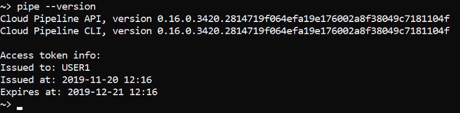

14.1. Install and setup CLI
- How to install and setup
pipeCLI configurecommand options- Allow to run
pipecommands on behalf of the other user - Update the CLI
How to install and setup pipe CLI
- Go to Settings → CLI tab.
- Select Pipe CLI item at the left panel.
- Select your Operation System from the list.
- Follow the installation instructions for your OS (e.g. Linux). Commands below shall be executed in the Terminal.
When installation is finished, typepipein the Terminal to test pipe installation. This command shall produce short description of pipe CLI and pipe CLI commands (it is the same as thepipe --helpcommand execution).
Then type thepipe --versioncommand - this command will output only the Cloud Pipeline CLI version:
- Return to the Web GUI and press the Generate access key button.
- Copy CLI configure command

- Paste copied command into the Terminal and run it to configure:
- Now Cloud Pipeline CLI is ready to use. To check it, run the command
pipe --versionagain:

This time the command will output the Cloud Pipeline CLI version, API version, short info about received access token (the user-owner name, usage dates)
Note: when
pipeCLI is being configured JWT token is given for one month, if user didn't select another expiration date. The warning about the expiration date of the provided token is printed, if it is less than 7 days left:
- after
pipe configurecommand executing:
- when any other command is running, e.g.:


Note: If any exceptions occur during installation, follow the instructions in the Terminal.
Notice that Python 2 / Python 3 has to be installed to run CLI. Python can be downloaded here https://www.python.org/downloads/.
Note: pip package manager is required for CLI installation if you selected Operation System → Other on step 2. Modern Python versions come bundled with pip. On top of that, with this type of installation you'll also need internet connection to install dependencies.
configure command options
| Options | Description |
|---|---|
| Required options | |
-a / --auth-token |
Token for API authentication |
-s / --api |
URL of a Pipeline API endpoint |
-tz / --timezone [local|utc] |
Sets presentation timezone. Default: local |
| Non-required options | |
-p / --proxy |
URL of a proxy for all calls |
-nt / --proxy-ntlm |
Enables NTLM proxy support |
-nu / --proxy-ntlm-user |
Sets username for NTLM proxy authorization |
-np / --proxy-ntlm-pass |
Sets password for NTLM proxy authorization |
-nd / --proxy-ntlm-domain |
Sets domain for NTLM proxy authorization |
Note: there is not necessary to set all options while input that command. If some options are not set directly - user shall be prompted for them in an interactive manner, if they will not be set in an interactive manner, default values will be used (where it is possible).
pipe configuration for using NTLM Authentication Proxy
CLI pipe can be configured for using NTLM Authentication Proxy, when running in Linux.
For that, use the ntlm options described above while execute pipe configure command.
If pipe configure command is executing with specified --proxy-ntlm option, pipe will try to get the proxy value from the --proxy option or the environment variables (--proxy option has a higher priority).
Example:
pipe configure --proxy-ntlm --proxy "http://myproxy:3128"
Allow to run pipe commands on behalf of the other user
Note: the functionality is able only for users with the ROLE_ADMIN role.
It could be convenient/useful for administrators to perform some operations on behalf of the other user (e.g. check permissions/act as a service account/etc.).
For that in pipe CLI, there are two abilities:
- separate
pipe tokencommand - common option
-u(--user) for allpipecommands
Using pipe token command
This command prints the JWT token for a specified user.
JWT token could be used manually as authentication API token with the pipe configure command (as described above) - to configure pipe CLI on behalf of the desired user.
The format of the command:
pipe token <USER_ID> [OPTIONS]
<USER_ID> is the name of the user account.
| Options | Description |
|---|---|
| Non-required options | |
-d / --duration |
The number of days the token will be valid. If it's not set - the default value will be used, same as in the GUI |
For example, to get a JWT token for the user USER3 for 5 days:
Using '--user' option
To run separate pipe commands on behalf of the other user - the common option, that was added to all pipe commands, can be used: --user|-u <USER_ID> (where <USER_ID> is the name of the user account).
Note: the option isn't available for the commands configure, --version, --help.
If this option is specified - operation (command execution) will be performed using the corresponding user account.
Some examples:
- view active runs on behalf of the user without ROLE_ADMIN role:
- list storage content on behalf of the user without ROLE_ADMIN role that hasn't read permission on that storage:
- list storage content and the attempt to upload the file on behalf of the user without ROLE_ADMIN role that has read permission and hasn't write permission on that storage:
Update the CLI
The command to update the Cloud Pipeline CLI version:
pipe update [PATH]
PATH - defines the API URL path to download Cloud Pipeline CLI source (optional argument).
This command compare the CLI and API versions. If the CLI version is less than the API one, it will update the CLI - the latest Cloud Pipeline CLI version will be installed. Otherwise no actions will be performed.
Example: